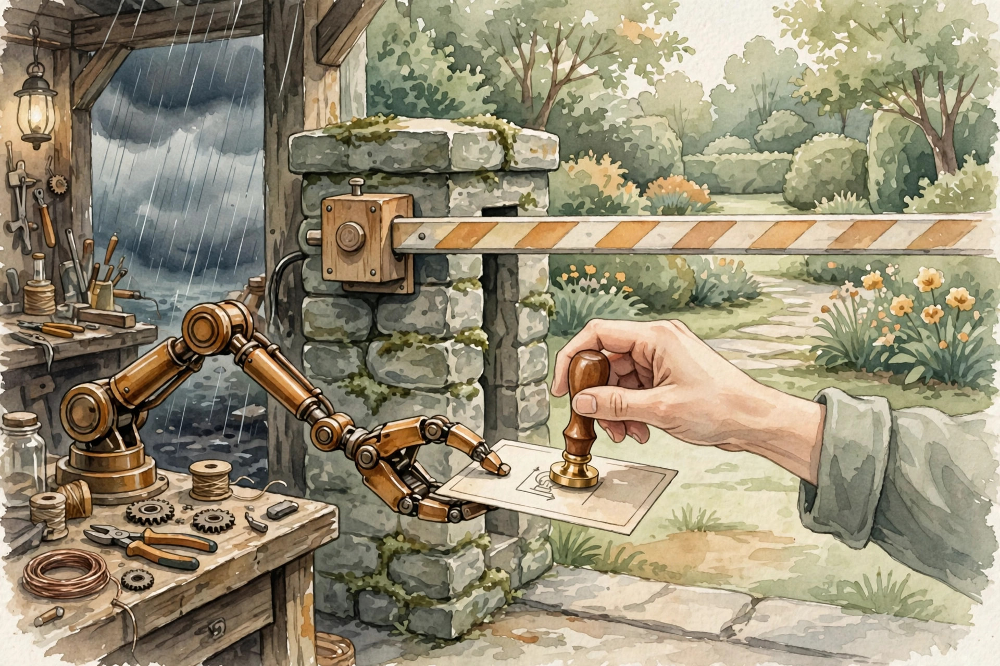

U02 gave the system evidence. U03 gives it hands: tools the model can call, and the rules that keep those hands safe. This companion walks the full U03 arc: the REPL, function schemas, the tool-result loop, MCP, auth, sandboxes, timeouts, retries, idempotency, approval, output contracts, and tool design.
Source fact A claim or number taken from the lesson file content/v2/cs329z/lessons/u03_lesson.md. Each chart carries its lesson section.
Illustration A toy, picture, or simulation built for this page. It runs the lesson rule on tiny fixed inputs. It is not a lesson measurement.
Companion note My own synthesis. It joins lesson facts into advice. The lesson does not state it directly.
C01…C12 Concept numbers from the lesson.
Sourcing. No full lecture transcript exists for these sessions. Concepts C01, C02, C04, C06, C08, and C12 map to session S04 (5 Oct 2026), source-supported at schedule-title level only (schedule inspected, slide deck not opened). C04 additionally uses the MCP architecture page (SRC-05, inspected full). C12 additionally uses the Anthropic article Building Effective Agents (SRC-04, inspected full). Concepts C03, C05, C07, C09, C10, and C11 are requested extensions, taught as independent theory. This page narrates the lesson content, not a lecture recording.
Source fact Read the input, evaluate it, print the result, repeat. As a tool, the REPL gives the model a scratchpad that actually runs. Toy session: call 1 defines x = [3, 1, 2]. Call 2 sorts x. Call 3 prints sum(x) = 6. Three calls, one namespace, final answer 6. If the session reset between calls, call 3 would fail with an undefined name C01 contracts 2, 6.
The justification for statefulness: later calls reuse earlier variables, so multi-step analysis works. The price: state leaks between tasks unless sessions reset C01 contract 5.
Break the sandbox assumption and the model runs os.remove on the host. The tool works as designed and destroys data. That is why C06 exists C01 contract 11.
Trace of the toy session: lesson numbers C01·6
Statefulness is what makes the REPL useful and what makes it dangerous.
Source fact A schema is a menu with ordering instructions. Toy schema: name multiply, description Multiply two numbers, parameters {a: number, b: number}, required [a, b]. The model reads the schema and emits {a: 6, b: 7} C02 contract 2.
The model never sees the implementation, only the menu. So descriptions route calls: with clear descriptions the model routes multiply 6 by 7 to multiply. With the descriptions "does math stuff" versus "does stuff", the pick is a coin flip. One word changes the routing C02 contracts 5, 6.
The menu has a token price: ten tools at 200 tokens each = 2000 tokens of menu on every step C02 contract 9.
The model matches task to description. Vague tools get vague use.
Source fact Think: what do I need? Call: ask the tool. Observe: read the result. Repeat until the answer is ready or the budget dies. Toy trace: think → call(multiply, {a:6,b:7}) → observe(42) → think → call(is_prime, {n:42}) → observe(false) → answer(42, not prime). Six states, two tools, one answer C03 contracts 2, 3.
The budget is load-bearing. Each step costs 500 tokens and B = 10 steps caps the run at 5000 tokens. The 6-state trace costs 3000. A loop with no budget on a failing tool costs unbounded tokens C03 contract 6.
Without a budget a confused model loops forever. The budget turns run until done into run until done or B.
Source fact Three roles: the host is the computer (the AI app), the client is the port driver (one per server), the server is the device (it offers tools, resources, prompts). Two transports: stdio for a local process, Streamable HTTP for remote with standard HTTP auth. Data layer: JSON-RPC 2.0 C04 contracts 3, 4.
Discovery settles versions: the client sends server/discover, the server replies with its protocol versions and capabilities. Toy handshake: client offers version 2026-07-28, the server supports it and older, negotiated 2026-07-28. tools/list returns 3 tools. Four messages, one working tool C04 contract 6.
Break the version assumption and a call fails with "method not found". Pin versions per deployment C04 contract 11.
The handshake: lesson numbers C04·6, roles from SRC-05
One server, two clients, zero duplicate integrations.
Source fact Authentication is the ID check at the door. Authorization is the wristband that says which rooms you may enter. Toy: 1000 calls, 50 with invalid tokens (rejected at gate 1), 30 with valid tokens but no permission (rejected at gate 2), 920 served. Reject rates 0.05 and 0.03. One gate would miss 30 C05 contracts 3, 6.
The order: authenticate first (cheap, no policy lookup), then authorize (policy lookup). And per-call checks, because permissions change. A login-time check goes stale C05 contract 5.
A valid key with no permission gets a 403. The lesson never merges the two remediation.
Is this token valid? May this identity call this action? Ask both, on every call.
Source fact A sandbox is a playpen with walls. Inside: the code plays. The walls: no network, no host filesystem, limited CPU and memory. Toy policy: allow reads, writes to /tmp, network off. Deny everything else. 6*7 runs. os.remove(/data) is denied before execution C06 contracts 2, 3.
Toy: 100 snippets, 70 benign, 30 malicious. Default-deny: 70 run, 30 denied, 0 escapes. A deny-list with 3 rules: 70 run, 27 denied, 3 escape (the novel attacks). The arithmetic favors default-deny C06 contract 6.
The bypass: the sandbox filters file writes but allows subprocess with shell. The model writes through the shell. One unfiltered path voids the sandbox C06 contract 11.
Allow-lists fail closed: a forgotten entry blocks a feature. Deny-lists fail open: a forgotten entry allows an attack.
Source fact A tool usually answers in 0.2s but sometimes hangs for 30s. Toy distribution: P(0.2s) = 0.9, P(2s) = 0.09, P(30s) = 0.01. Expected wait without timeout: 0.66s. With a 5s timeout: 0.41s. The timeout buys 0.25s expected and caps the worst case at 5s C07 contracts 2, 6.
The mechanism is E[min(T, tau)]: mass above tau collapses to tau. The tail is where the cost lives: 0.30 of the 0.66 expected seconds came from 1 percent of calls. Cut the tail, keep the body C07 contract 5.
Set tau from measured p99, not from hope. And never time out a non-idempotent write blindly: the call can time out after the write happened, and the retry double-writes (C09) C07 contracts 9, 11.
One slow call holds the whole loop hostage. The timeout converts maybe 30s into at most 5s, then a handleable error.
Source fact A call fails with probability 0.2. Three tries, independent: all-fail probability = 0.2³ = 0.008. Success rises from 0.80 to 0.992. Expected tries = 1 + 0.2 + 0.04 = 1.24. Expected wait with 1s, 2s backoff: 0.28s. Two extra tries buy 19 points C08 contracts 2, 6.
Backoff with jitter avoids synchronized retry storms. Retry only transient failures: 5xx, timeouts, rate limits. Fail fast on permanent errors: 400, auth failures C08 contracts 5, 10.
A retry is politeness with math. The pause lets the failure clear.
Source fact An idempotency key is a name tag on the request. Toy: charge $50 with key K. Try 1 times out after the server processed it. Try 2 sends the same K. The server sees K and returns the original receipt. Charged: $50 once. Without K: $100 C09 contracts 2, 3.
Toy: 100 charges, timeout rate 0.1, all retried once. Expected without keys: 10 double charges = $500 extra on $5000. With keys: $0 extra. The key is worth the timeout rate times the amount C09 contract 6.
The key must be unique per logical operation, not per attempt. A per-attempt key defeats the whole mechanism. And reusing one key for all charges merges distinct operations: every charge after the first returns the first receipt C09 contracts 9, 11.
Exactly-once effect from at-least-once delivery, via the key.
Source fact Toy tiers: read (auto), write to /tmp (auto), send email (approve), delete database (approve + second factor). The loop pauses at the gate and resumes on approval. Toy: 100 actions, 70 auto, 25 approve, 5 deny. Approval latency 60s each. Expected added latency = 25 × 60s / 100 = 15s per action C10 contracts 2, 6.
The binding rule: the approved action must be exactly the executed action. Freeze the action, get a signed approval of the exact (tool, args), execute only that. Without binding, the model can show read file and run delete file C10 contract 5.

The gate costs human time, the scarcest resource. Keep the approve bucket small or it becomes a click-through ritual.
Source fact An output contract is the tool promise about its answers. Toy contract: {results: [{title, url, snippet}], latency_p99_ms: 800, errors: [RATE_LIMIT, TIMEOUT, AUTH]}. The model knows the shape, the speed, and the failure modes before calling C11 contract 2.
Toy error rates: RATE_LIMIT 0.05 (retry), TIMEOUT 0.01 (retry), AUTH 0.001 (abort). A caller that retries on the enum versus one that aborts on any error: success 0.999 versus 0.94 on 1000 calls. The enum is worth 6 points C11 contract 6.
Break the honor assumption: the tool adds a new error code silently. The caller switch falls through and the error is mishandled C11 contract 11.
Named errors turn it failed into retry versus abort versus ask.
Source fact Two file tools: "read_file(path)" and "f(p, m)". The model calls read_file correctly on the first try. It misuses f three times: wrong arg order, wrong mode flag. Names are UI for the model C12 contract 2.
Toy: 100 tasks. Tool A (one job, clear name): 92 correct calls. Tool B (three jobs, terse name): 61 correct calls. The design gap is 31 points on identical capability C12 contract 6.
The Anthropic guidance (SRC-04): craft the tool interface through documentation and testing, like any API. One job per tool. Granularity has a context cost: 50 perfect small tools make a 10,000-token menu the model cannot search (C02) C12 contracts 3, 11.
Clear names, one job per tool, good descriptions, useful errors, examples.
| # | Concept | Transferable principle |
|---|---|---|
| 01 | REPL | Reset sessions between tasks. Stateful for analysis, single-shot when tasks are independent. |
| 02 | Function schema | Write descriptions like API docs: name, when to use, exact parameters. |
| 03 | Tool/result loop | Choose the loop when the step sequence is unpredictable. Choose a fixed workflow when the steps are known. |
| 04 | MCP | Choose MCP when tools are shared across apps or vendors. Choose hand-rolled when one app owns all tools. |
| 05 | Auth | Authenticate cheaply first, authorize per call. Never check once at connect time. |
| 06 | Sandbox | Sandbox all model-generated code. Enforcement must be complete or it is decorative. |
| 07 | Timeouts | Measure the latency distribution weekly and re-tune tau. |
| 08 | Retries | Cap r and total wait, and keep the retry loop inside the agent budget B. Jitter the waits. |
| 09 | Idempotency | Use keys for charges and sends. Skip them for reads and pure sets. |
| 10 | Approval | Tier by reversibility and blast radius. Deny by default on unanswered approvals. |
| 11 | Output contracts | Version the contract. Callers pin versions. Contract-test every tool weekly against its SLA. |
| 12 | Tool design | A/B test tool renames on live traffic. Review granularity quarterly. |
Companion note The lesson plates u03_f01 through u03_f06 (before/after pairs from the original toys) sit behind this page's figures: f01 the think/call/observe loop, f02 the MCP roles, f03 the sandbox boundary, f04 the timeout and backoff timeline, f05 the idempotency key, f06 the approval gate. Each chart above re-plots the same lesson numbers with its section citation.